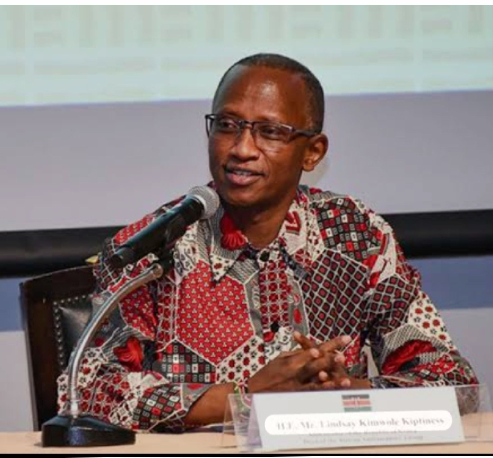
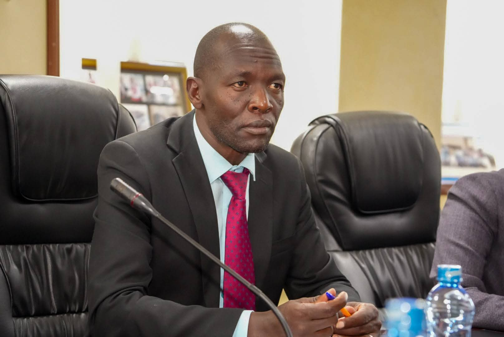
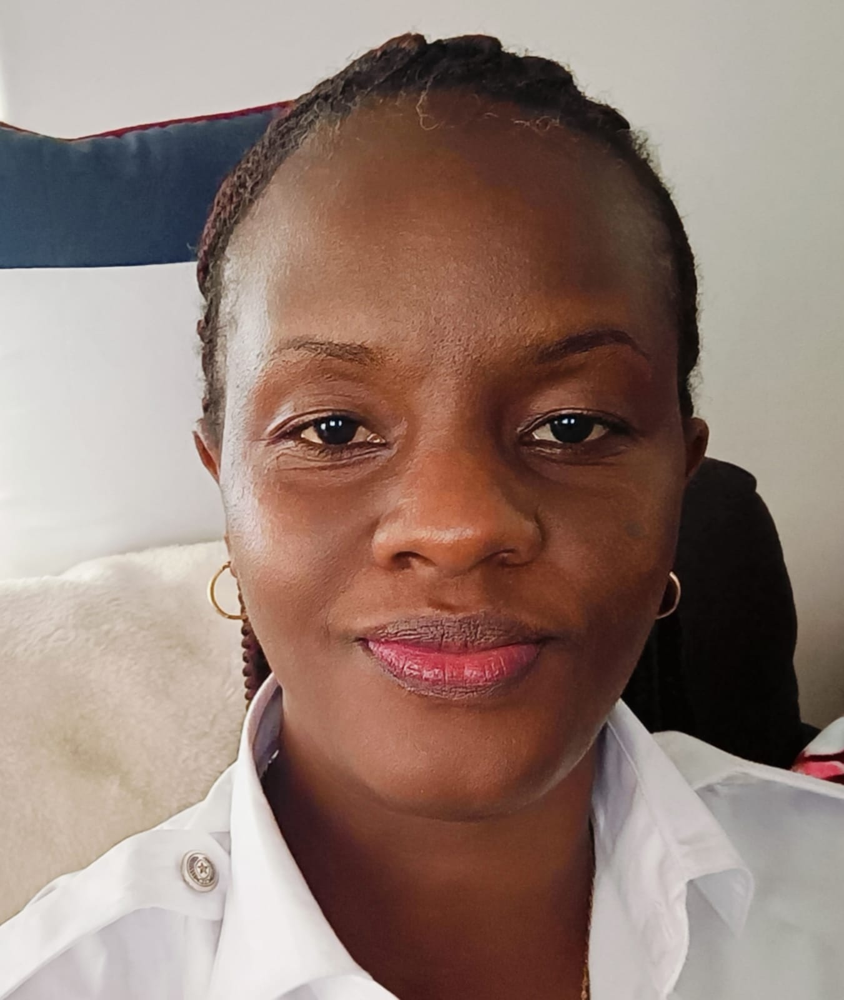

Meet the team making mentorship happen.
Kipchumba Korir
Founder, Director Globalink Mentorship InitiativeKorir co-founded GlobaLink Mentors in 2013 after running weekend career talks at her old secondary school. She now leads strategy, partnerships and fundraising across all four counties.
View profile →Amb. prof. Peter Ngure
UNESCO Kenyan Ambassador to FranceDavid oversees the day-to-day running of every mentorship circle, translating the curriculum into what actually happens in classrooms each week.
View profile →
Amb. Lyndsay Kimwolei Kiptiness
Patron Globalink MI & Foreign AffairsGrace keeps the organisation accountable to its donors, managing budgets, compliance and the systems that let the programme scale responsibly.
View profile →HE. Amb. Valerie Rugene
Head of Monitoring & EvaluationSamuel built our attendance, grades and wellbeing tracking system, turning mentor session notes into evidence we can act on.
View profile →Dr. Betty Chebitok-Wang (PhD)
Clinical Psychologist & Nebraska Criminal Justice System, USAFaith is the first call for every head teacher considering a partnership, and stays the main contact for as long as the school is with us.
View profile →Dr. Mary Kerich
Moi UniversityBrian coordinates 18 mentor pairs across five Nairobi schools and runs our new-mentor onboarding weekends.
View profile →Prof. Olimpia
Senior Programme Officer, KiambuCynthia leads our Kiambu county cluster and designed the study-skills module used in every circle nationwide.
View profile →Eng. Benard Maranga
Principal Officer, Communications Authority of KenyaA civil engineer by training, Peter runs our STEM career clinics and has mentored the same cohort for three years running.
View profile →Linet Wambui
Mentorship Coordinator, MachakosLinet manages mentor-mentee matching in Machakos, pairing personalities as carefully as she pairs subjects and interests.
View profile →
Dir. Abraham Cheruiyot
Dir. Lake Victoria Water Works Dev't AgencyKevin facilitates our life-skills curriculum, covering everything from financial literacy to healthy relationships and self-advocacy.
View profile →
Susan Mbithi
CEO Olosotua ltdMercy helps final-year mentees navigate university and TVET applications, scholarship forms and interview prep.
View profile →Petronella Gathu
EntrepreneurJoseph opened our Kajiado county programme in 2022 and now oversees eight partner schools there.
View profile →WO 2 Akinyi LN
KAF Avionics technicianA trained counsellor, Esther supports mentors handling sensitive cases and runs our termly mentor debrief circles.
View profile →Dennis Omondi
Volunteer Mentor TrainerDennis designs and delivers the two-day training every new volunteer mentor completes before their first session.
View profile →Purity Wangari
Communications & Fundraising OfficerPurity tells the stories behind the statistics — from our newsletter to the campaigns that keep donations flowing.
View profile →Alex Kiprotich
IT & Data Systems OfficerAlex maintains the digital systems mentors use to log sessions and the dashboards leadership uses to track progress.
View profile →Sharon Moraa
Community Volunteer ManagerSharon recruits and screens every volunteer mentor, making sure each one is vetted, trained and genuinely ready.
View profile →